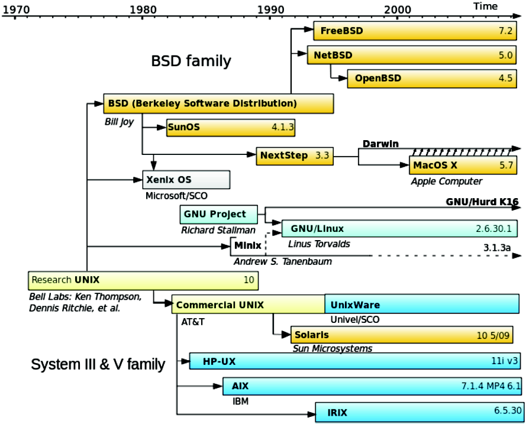

Research School of Engineering
ENGN8537: Embedded Systems and Real Time Digital Signal Processing
Morbo will now introduce tonight's candidates…
PUNY HUMAN NUMBER ONE
PUNY HUMAN NUMBER TWO
and Morbo's good friend
Linux
Scheduling
References:
Robert Love, Linux Kernel Development (2nd Edition), Pearson Education 2005
Linux Kernel in-tree documentation (“Documentation/”)

Linux was first released in 1991. It is an Operating System Kernel, not a whole operating system. The whole system is typically referred to as a Linux Distribution or, if packaged with a specific set of userspace programs, GNU/Linux.
Used in…
- Desktops
- Servers
- Android Phones
- Smart TVs
- Digital Cameras
- Almost every Sony product
- …
Linux is commonly used on embedded devices for a number of reasons:
- Cheap (no per-unit costs)
- Configurable
- Runs on more processors than any other kernel ever has (26 official at last count, many more unofficial)
- Has a huge range of libraries and tools available
- Provides a familiar programming environment for those coming from non-embedded backgrounds
Real Time?
Microkernel
RTAI, RTLinux, Xenomai.
Separate RT Executive that schedules the Linux kernel as a low-priority process.
Preempt RT
Named for the configuration option, it is a set of tweaks to Linux itself that improve RT behaviour.
It was never designed for real time use, so applications in embedded systems must be approached with care. There are a number of efforts that have gone in to making Linux more suitable for hard real time tasks.
One approach is to run Linux inside another real time executive (RTLinux, RTAI). The less radical approach is found in the “PREEMPT_RT” work that is sponsored by many commercial embedded Linux vendors. Later in the lecture we will examine some examples of where this works and where it doesn’t.
“Controlling a laser with Linux is crazy, but everyone in this room is crazy in his own way. So if you want to use Linux to control an industrial welding laser, I have no problem with your using PREEMPT_RT.”
Linus Torvalds
Processes
Thread
Schedulable entity with implicitly-shared resources.
Task
Schedulable entity isolated from all others.
Process
Level of sharing defined when created.
clone(); fork();
New processes created with clone(). The programmer usually calls fork() which uses clone() internally.
fork() returns twice.
if (fork()) {
/* This code is run by the parent */
} else {
/* This code is run by the child */
}
/* Anything after the above if statement
will be run by both parent and child */Processes are created on Linux using the clone() system call. More usually, the programmer will call fork() which uses clone internally. Fork creates what we would think of as Tasks, in that parent and child will not share memory once they’re running.
These functions are interesting: You call them once, they return twice. From the point of view of the parent, fork returns the process identifier of its new child. From the point of view of the child, fork returns zero.
Note that the example doesn't do any error checking, do not copy!
The usual practice is to use the exit() system call to terminate the child before it leaves the if statement.
if (fork()) {
be_parental();
} else {
be_childish();
exit();
}
wait_for_child_to_die();
clean_up();
exit();Note the order of exit, the parent should wait for the child to die before exiting itself.
Why?
• It’s assumed the parent has started the child for a reason, it is usual for it to be around to see the results
• If the child doesn’t execute correctly, the parent presumably needs to know about it
In Linux, if a parent doesn’t wait for a child to die, the child might become a
zombie and never completely disappear. It waits around, using system resources indefinitely.
If the parent dies before the child, the orphan tasks are ‘re-parented’ to the init task in order to maintain a (semi-) sane process hierarchy.
What happens to existing memory?
Will i, as printed by the child, have a well-defined value? What will it be?
int i = 7;
if (fork()) {
i = 42; /* Parent code */
} else {
print(i); /* Child code */
exit();
}Forking doesn’t share memory from parent to child, so it can’t print 42, nor can ‘race’ with the parent thread to print some hybrid of 42 and 7.
It might make sense for the child to start with no variables, but in practice that’s ungainly and makes it difficult to perform tasks like setting up communication mechanisms between parent and child.
The child starts off with a value of i = 7 and that's what it prints.
- The parent's write doesn't affect the child's value of
i
- The child and parent must have different copies of
i
- By extension, they must have different copies of all variables.
- When a child starts, it must copy all of the parent's memory?
COW
The parent and child must have their own copy of memory
The parent and child must have their own copy of any memory that differs
The parent's memory is marked Copy on Write and is only duplicated if either the parent or child tries to write to it.
Scheduling Classes
SCHED_RR, SCHED_FIFO
“Real Time” by some definition. Fixed-priority with processes at the same priority scheduled in Round-Robin or First-in-First-out order.
SCHED_OTHER
Default for all processes. Scheduled using a non-RT algorithm known as CFS
CFS
Models the ideal multithreading processor set on real hardware.
CFS was written once the kernel had added support for High Resolution Timers, allowing actual task run time to be accounted for with nanosecond resolution, opening up new options for scheduling.
The operation of CFS can be summed up in a single sentence: CFS models the ideal multithreading processor set on real hardware.
Ideal multithreading hardware doesn’t exist, so it’s emulated on a real CPU quite simply: If two tasks of the same priority want to run, each should get 50% of the CPU.
Conceptually, the CPU should flick back and forwards between those two tasks as fast as possible so that neither is particularly favored over the other. Of course, in the real world, there must be some granularity here. (Why?)
Priority
Splits CPU ratiometrically. Two tasks with the same priority will get the same share of the CPU. A task with double the priority of another will get double the share of the CPU.
Heirarchy
Can split the CPU ratiometrically on other things too; e.g. two users of the same priority get the same share of the CPU. Within each User, processes can be scheduled as usual, appearing to run on a CPU half as powerful.
Latency
No guarantees on latency. Any process of any priority can preempt any other. The latency for a particular task to get CPU time is a function of the running behaviour of every other process on the system.
Latency
SCHED_RR, SCHED_FIFO
- The Kernel itself has many internal tasks, some of which have RT priority
- Kernel interrupt handlers are relatively large and not able to be preempted, even by RT processes
- Aggressive power management means that tasks are moved around available CPUs in order to best manage power. Migration to another CPU will almost certainly change the cache behaviour
- The kernel is full of complex interdependencies and locking that can’t be preempted
- Large portions of kernel code must be run with interrupts disabled, compounding the issues above.
- Linux may aggressively use frequency scaling and opportunistic suspend
Some of these issues are softened when using PREEMPT_RT kernels; most aren't.
An analysis of all the RT processes in the kernel is possible, but complex.
Opportunistic suspend is the act of putting the computer in to a deep sleep whenever it looks like no program is running. It is used a lot on mobile phones.
SCHED_OTHER
All of the issues with CFS compounded with all of the issues from the real-time classes.
Linux is
not real time.
… A sufficiently expert programmer may be able to make it work closely enough to RT for many applications, but that doesn't alter the above conclusion.